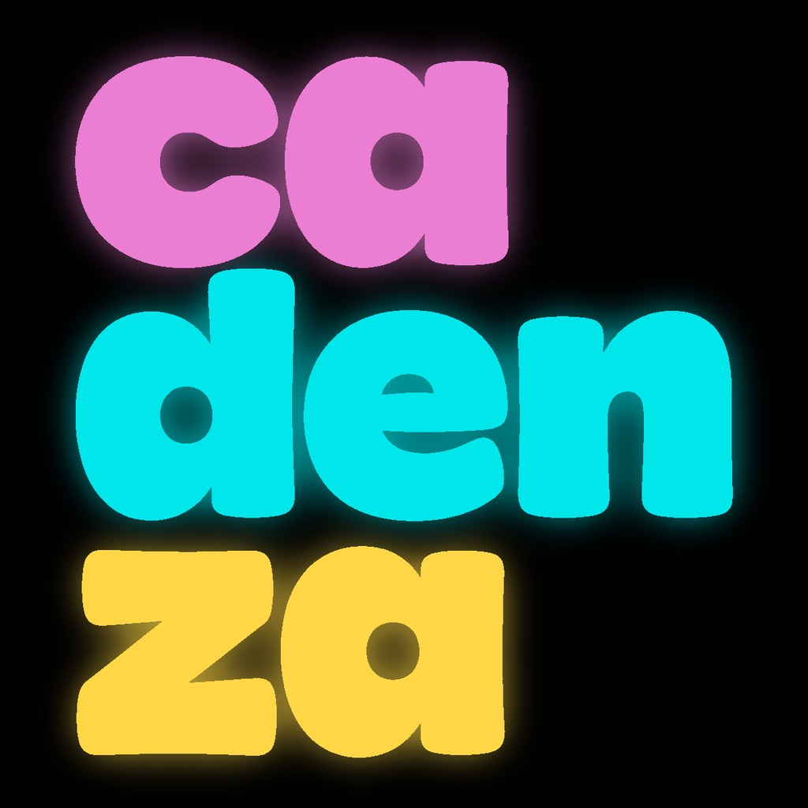
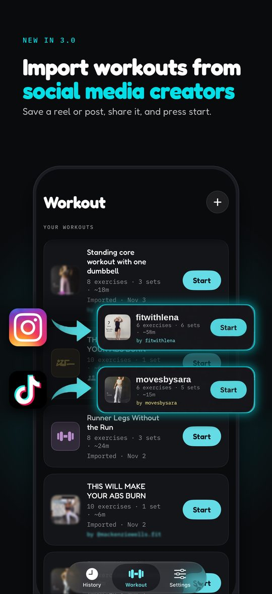
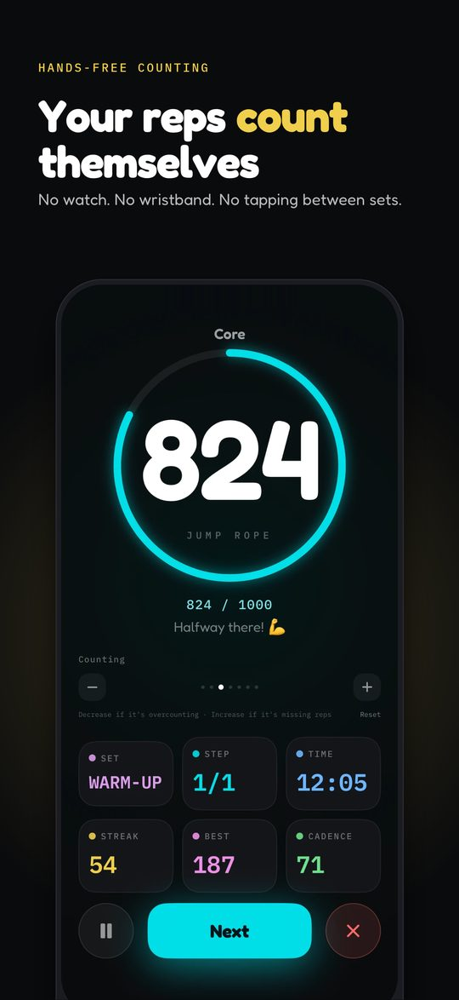
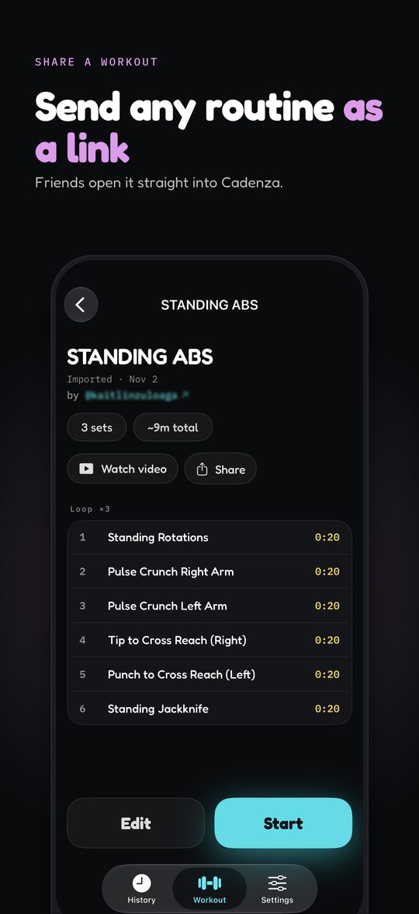

Cadenza turns workout reels into routines you can follow
Turn workout videos you saved from Instagram Reels and TikTok into step-by-step routines with timers, spoken cues and hands-free rep counting. Free, no account, and everything stays on your iPhone.
Free · no in-app purchases · iPhone · iOS 26+



From a saved reel to a workout in three steps
- Save the workout. Save the video to Photos, take screenshots of the moves, or copy the caption.
- Share it to Cadenza. Cadenza reads the moves written on screen and in the caption, then builds the routine: exercises, reps or times, sections and rest.
- Check it, then press start. Edit anything that's off, and follow along with timers, spoken cues and a clip of each move.
You can import a video, up to 20 screenshots, a video with a screenshot of its move list, or a pasted caption. It works best when the moves are written on screen or in the caption. Cadenza processes imports on your iPhone, so it can't read posts from a link: save the video first.
What you get
- Step-by-step routines from saved workout videos, screenshots or captions, checked and edited by you before saving
- Follow-along clips: the video stays with your routine, and a short clip of each move plays in the Next up countdown
- Hands-free rep counting from your AirPods' head motion for squats, lunges, side lunges, step-ups, jump squats, tuck jumps, burpees, skaters, jumping jacks and jump rope. Every other move runs on a timer.
- Spoken cues announce each step, count you in, call out the halfway point and tell you when you're done
- Collections group workouts, run them back to back and send a weekly reminder on the days you choose
- Build your own from a library of 55+ moves, or start from a preset. Prompt (Beta) drafts a routine from a short description on iPhones with Apple Intelligence, using a small on-device model.
- History by week, month or all time, with workouts saved to Apple Health
- Share any routine as a link
Questions
How do I turn an Instagram Reel into a workout routine?
Save the reel's video to your Photos (or take screenshots of the moves), then share it to Cadenza from Photos. Cadenza reads the moves written on screen and in the caption, builds a step-by-step routine, and lets you check and edit it before you save it.
Can I save TikTok workouts as routines?
Yes. Use TikTok's Save video, then share the video from Photos to Cadenza. You can also paste the post's caption or add screenshots of its move list.
Can I just paste a Reel or TikTok link?
No. Cadenza works on your iPhone and doesn't download posts from links. When you share only a link, it shows the steps to save the video and share it from Photos instead.
What if the video has no text on screen?
Cadenza reads on-screen text and captions, not the voiceover. Paste the caption, or add a screenshot of the move list, and it uses that. Imports work best when the moves are written on screen or in the caption.
Does it work with workout videos from other places, like YouTube?
Cadenza imports any workout video that is in your Photos library, wherever it came from, as long as the moves are written on screen. It doesn't fetch videos from YouTube or other sites.
Does Cadenza count my reps?
Yes, hands-free, for squats, lunges, side lunges, step-ups, jump squats, tuck jumps, burpees, skaters, jumping jacks and jump rope, using the motion sensors in AirPods Pro, AirPods (3rd generation or later) or AirPods Max. Every other move runs on a timer.
Do I need AirPods?
Only for hands-free rep counting. Imports, timed steps, spoken cues and full routines work without them.
Is Cadenza free?
Yes. Cadenza is free on the App Store, with no subscription, no in-app purchases, no ads and no account.
Are my videos uploaded anywhere?
No. Imports, the on-device AI features and your saved videos stay on your iPhone. Cadenza collects no personal data.
Can I plan workouts for the week?
Group workouts into collections, run them back to back, and get a weekly reminder on the days you choose. History shows every session by week, month or all time, and finished workouts save to Apple Health.
Is there an Android version?
No. Cadenza is for iPhone, on iOS 26 or later.
Jump rope, still first-class
Cadenza started as a hands-free jump-rope counter, and that mode is still here: a live, glanceable count and cadence, a goal, your streak and a new best to chase.
Questions? Email hello@curlybrackets.it or see the support page.
Instagram and TikTok are trademarks of their owners. Cadenza is not affiliated with or endorsed by them.